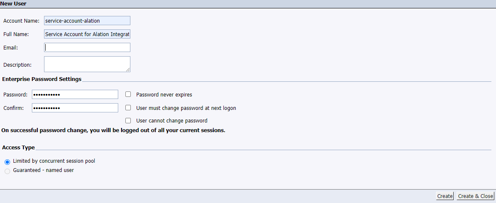

SAP BusinessObjects Connector: Install and Configure¶
Alation Cloud Service Applies to Alation Cloud Service instances of Alation
Customer Managed Applies to customer-managed instances of Alation
Configuration in SAP BO¶
Create a Service Account¶
STEP 1: Create User¶
Use the steps described below to create a service account and to grant it the required permissions.
Log in into SAP BO Central Management Console (CMC) with admin credentials.
Select the Users and Groups option.
Click the Users List option.
Right-click and select New User:
Select Authentication type as Enterprise and fill in the other details.
Select Access type as Guaranteed - named user. Alation recommends Guaranteed - named user so that the service account can get a token at any time to run extraction.
Click Create & Close.
The user can be found in the users list.
STEP 2: Create User Group¶
Create a user group:
Add the user created for Alation in Step 1 to this group.
STEP 3: Grant Permissions¶
The Service Account requires View permissions on folders and universes to extract metadata.
Universe Permissions¶
Log in into CMC and select Universes in the dropdown.
Click on Manage and select All Universes:
Click on Add Principals:
Click on the Group list and select the User Group created in Step 2. Click on Add and Assign Security:
Select the View permission and click OK:
Folder Permissions¶
Similarly, select Folders and select All Folders:
Click Add Principals and select the group created in Step 2 of Universe Permissions.
Click Add and Assign Security.
Under the Access levels tab, select the View permission.
Under the Advanced tab, click on Add/Remove Rights:

Click Content:
Select Web Intelligence under Content. Grant permissions to View SQL and click OK.
Configuration in Alation¶
STEP 1: Install the Connector¶
Alation On-Premise¶
Important
Installation of OCF connectors requires Alation Connector Manager to be installed as a prerequisite.
To install an OCF connector:
If this has not been done on your instance, install the Alation Connector Manager: Install Alation Connector Manager.
Ensure that the OCF connector Zip file is available on your local machine.
Install the connector on the Connectors Dashboard page using the steps in Manage Connectors.
Alation Cloud Service¶
Note
On Alation Cloud Service instances, Alation Connector Manager is available by default.
Depending on your network configuration, you may need to use Alation Agent to connect to databases.
Connection via Alation Agent¶
Ensure that Alation Agent is enabled on your Alation instance. If necessary, create a Support ticket with Alation for an Alation representative to enable the Alation Agent feature on your instance and to receive the Alation Agent installer.
Connection Without Agent¶
To install an OCF connector:
Ensure that the OCF connector Zip file is available on your local machine.
Install the connector on the Connectors Dashboard page using the steps in Manage Connectors.
STEP 2: Create and Configure a New BI Server Source¶
This configuration requires the role of the Server Admin.
Add a New BI Server Source¶
Log in to the Alation instance and add a new BI Server source: Apps > Sources > Add > BI Server. The Register a Business Intelligence Server screen will open.
From the Select a Business Intelligence Server type list, select BusinessObjects and enter a Title and a Description:
Click Add. You will be navigated to your new BI Server source Settings page.
Configure the BusinessObjects BI Source¶
Note
This section describes configuring settings for credentials and connection information stored in the Alation database. If your organization has configured Azure KeyVault or AWS Secrets Manager to hold such information, the user interface for the General Settings page will change to include the following icons to the right of most options:

{kind=link}
{kind=link}
{kind=link}
{kind=link}
{kind=link}
{kind=link}
By default, the database icon is selected, as shown. In the vault case, instead of the actual credential information, you enter the ID of the secret. See Configure Secrets for OCF Connector Settings for details.
Perform the configuration on the Settings page.
Specify Application Settings:
Upto 2021.1:
From 2021.2:
From 2021.3:
Parameter
Description
Disable Hard Sync
Leave this checkbox unselected.
Selecting it will disable synchronization of BI objects between Alation and SAP BO.
Note
This is not applicable from version 2021.2
Disable Automatic Lineage Generation
Select the Disable Automatic Lineage Generation checkbox to skip the creation of automatic Lineage after extraction. When automatic Lineage generation is disabled, during extraction Alation does not calculate Lineage data for this BI source.
For more information, see Disable Automatic Lineage Generation.
Note
This is applicable from version 2021.3
Enable Raw-metadata Dump
Leave this checkbox unselected.
This parameter can be used for debugging. When selected, the connector will not post extracted meta data to Alation. The data will be stored in files which can be shared with Support for debugging.
Enable Ingestion Replay from Metadata Dump
Leave this checkbox unselected.
This parameter can be used for debugging. Metadata from the files created when the Enable Raw-metadata Dump checkbox is selected will be loaded into Alation.
Disable Permission Enforcement
Leave this checkbox selected.
Permission enforcement is not supported between BusinessObjects and Alation.
Disable Certification
Leave this checkbox selected.
Certification of BI objects in BusinessObjects from Alation is not supported.
Server URI
Enter the server URI used to access BusinessObjects Launch Pad URL.
Click Save to save the information you have entered.
Specify Connector Settings:
Parameter
Description
SAP BO API URL
Enter BO API URL. API URL should end with a slash (“/”)
BO Username
Enter username of BusinessObjects Service Account
BO Password
Enter password of Business Objects Service Account
Universe Connection Details
Used to populate lineage. Provide the universe name and its data source hostname as key value pairs separated by the
equals(=) symbol. Multiple universes should be separated by semicolons (;).Example: If the
Customeruniverse is created fromhttps://oracle.datasource.comand theHuman Resources.unxis derived fromhttp://mysql.server.com, then the values will beCustomer=https://oracle.datasource.com;Human Resources.unx=http://mysql.server.comDisable Server Certification
Used to bypass certificate validation for REST APIs (Not recommended). Applicable for HTTPS.
Server SSL Certificate
Upload the SAP BO Server certificate.
Log Level
Select the log level to generate logs. The available options are INFO, DEBUG, WARN, TRACE, ERROR, FATAL, ALL.
Note
This field is available from SAP BO OCF Connector version 1.1.0.
Cross-System Lineage:
Cross-System Lineage is to generate lineage between this SAP BusinessObjects BI source and any supported data source by this connector. To generate the cross-system Lineage, specify the host name and the port number of this BI source on the RDBMS connector’s General Settings > Application Settings > BI Connection Info field in the format mentioned below:
Host_Name:Port_NumberExample:
adb-8443049157651279.19.azuredatabricks.net:443
Note
This image is from the supported data source General Settings page.
Click Save.
Under Test Connection, click Test to validate network connectivity.
Configure metadata extraction under Extraction Settings. Turn on Selective Extraction, if required. Selective extraction settings are used to apply a filter to include or exclude a list of Folders.
From connector version 1.1.0:
Click Get List of Projects to first fetch the list of Folders from BusinessObjects.

The status of the Get Projects action is logged in the Job History table at the bottom of the Settings page.
After folder synchronization is complete, a drop-down list of the main Level of public folders will become enabled.
Select one or more Folders:
Check if you are using the desired filter option. Available filter options are described below:
Filter Option
Description
Extract all Folders except
Extract metadata from all Folders except from the workspaces selected.
Extract only these Folders
Extract metadata only from the selected Folders.
Click Run Extraction Now to extract metadata. The status of the extraction action is also logged in the Job History table at the bottom of the page.
If you wish to automatically update the metadata extracted into the Catalog, under Automated and Manual Extraction, turn on the Enable Automated Extraction switch and select the day and time when metadata must be extracted. The metadata extraction will be automatically scheduled to run on the selected schedule.
{kind=link}
{kind=link}
{kind=link}
{kind=link}
{kind=link}
{kind=link}
{kind=link}
Troubleshooting¶
Test Connection¶
If test connection fails, make sure the API URL and Service Account credentials are entered correctly.
If Lineage from data provider to underlying data sources table is not generated:
Lineage details for reports created from the universe and the universe should be created from a single data source.
Check whether the connection objects are populated with the queries under the data provider. If connection objects are missing, it is a permission issue. Check STEP 3: Grant Permissions.
Make sure the Universe Name and the Host Name details are provided in the Connector Settings.
Check if the tables used in queries in the connection object are cataloged in Alation by searching.
Lineage will be generated by parsing queries. Query parsing will be done by Alation QLI and not by the Connector. Check if there are any query parsing errors.
Logs to be collected¶
NGINX logs: /opt/hydra/agent/logs
Alation Connector Manager logs:
To tail:
docker logs -f agentWrite to a file:
docker logs agent >& agent.logs 2>&1Connector logs
Note
alation_ypireticommands should be run from the Alation shell as useralation.
To get Connector ID:
alation_ypireti list --fields id nameTo tail:
alation_ypireti kratos --subcommand tail <connector_id>Write logs to a file:
alation_ypireti kratos --subcomand tail <conector_id> > connector.log 2>&1Write logs from specific date to a file:
alation_ypireti kratos --subcommand logs --since 2020-08-15 <connector_id> > connector.log 2>&1Ingestion logs:
Ingestion logs are available in the celery-default_error.log file.